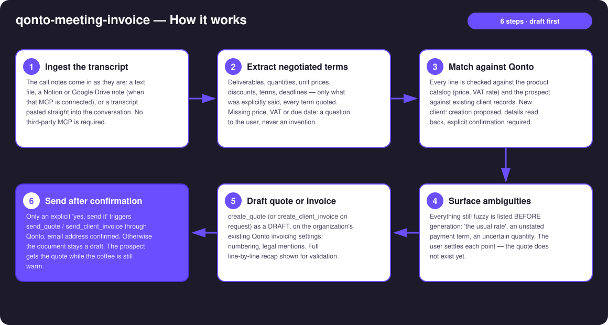
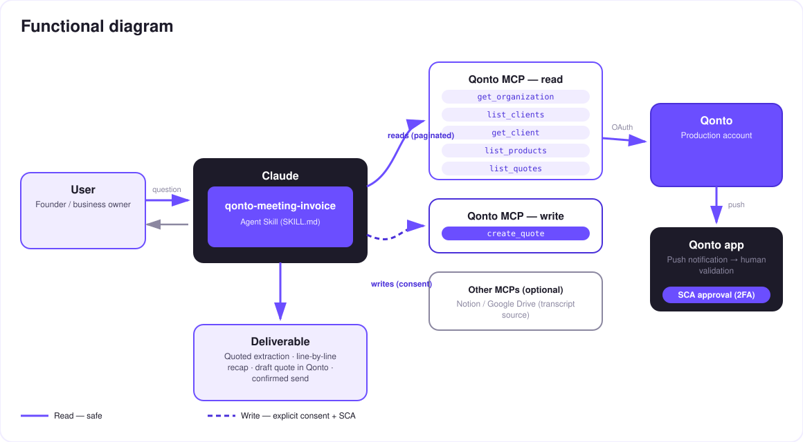

From call to quote, before the meeting ends — careful extraction, draft first, send after confirmation.
A great sales call, everyone's excited… and the quote goes out three days later. By then the momentum is gone. Call-to-invoice is a known dream — this skill's bet is making it trustworthy: what wasn't said on the call never enters the document.
A file, a Notion/Drive note (when that MCP is connected), or pasted text — no third-party MCP required.
Deliverables, quantities, prices, discounts, terms — only what was said, every term quoted. The rest: a question, never a guess.
Product catalog (prices, VAT), client records (confirmed creation for new prospects), duplicate check on existing quotes.
Quote (or invoice) as a draft, line-by-line recap, sent only after an explicit "yes, send it".
Would someone use this on a Monday morning? Every call that ends with "I'll send you a quote" is this skill's Monday morning.
| Prerequisite | Detail | Required |
|---|---|---|
| Qonto production account | Adapts to any organization — get_organization first, nothing hardcoded | ✅ |
| Country | All Qonto countries; legal mentions come from the country's invoicing settings, VAT rates never assumed (catalog or confirmation) | ℹ️ detected |
| Qonto MCP connected | Official connector (claude.ai / Claude Desktop), OAuth login | ✅ |
| Qonto invoicing configured | Numbering, legal mentions, payment details — set once in the app; the skill builds on them, never reinvents them | ✅ |
| A call transcript | File, Notion/Google Drive note, or text pasted into the conversation | ✅ |
| Product catalog | Services with prices and VAT (list_products) — without it, the skill asks for each missing price | ⭕ recommended |
| Notion / Google Drive MCP | Transcript source, detected dynamically — when absent, the skill says so and asks for a paste | ⭕ optional |

list_products) and confirmed; call/catalog divergences flagged ("the call says €850/day, your catalog says €900"), never settled silentlycreate_client proposed with known fields read back, missing ones asked; list_clients first (duplicate check)
Documents created via MCP are real: reads (catalog, clients, quotes) are risk-free; the write only produces a draft. Sending to the prospect requires explicit confirmation in the conversation, after the line-by-line recap. Nothing leaves without the user's go.
| Heard on the call | Becomes | Checked against |
|---|---|---|
| "Three workshop days in September" | Line item: Workshop · qty 3 · start date | Catalog: canonical title, unit price, VAT |
| "We'll take 10% off the audit" | Discount on the Audit line | Catalog price before discount |
| "The usual rate" | ⚠️ Listed ambiguity → confirmation requested | Catalog + the user's answer |
| "It's Acme, contact marie@…" | The quote's client | list_clients — match or confirmed creation |
| Payment term never mentioned | ⚠️ Listed ambiguity → question or Qonto default offered | The organization's invoicing settings |
| VAT never discussed | Rate from the product record, else confirmation | Catalog — never an invented default |
| Output | Format | When |
|---|---|---|
| Conversation reply | Markdown tables: quoted extraction, ambiguity list, line-by-line recap | Always — the baseline |
| Draft in Qonto | Quote or invoice on the organization's own invoicing template (native numbering & legal mentions) | After ambiguities are settled |
| Email to the prospect | Native Qonto sending (send_quote / send_client_invoice) | Only after explicit confirmation |
The ≤ 3-minute demo attached to the PR walks through: the problem (the quote that ships three days late) → pasted transcript & quoted extraction → catalog/client matching & the ambiguity list → the complete quote in Qonto ~90 seconds after the meeting ends, then the send → the guardrails. It runs live on a real production account.
| Idea | Effort | Note |
|---|---|---|
Automatic deposit ("30% upfront") via create_payment_link | Low | Official MCP tool, same confirmation logic |
Follow-up on unsigned quotes after N days (list_quotes) | Low | Pairs with an invoice-chasing skill |
| Direct audio transcription (file → text) when the host supports it | Medium | The skill stays text-transcript-first |
| A/B quotes (with/without an option) from the same call | Medium | Two drafts compared side by side |
| Quote in the prospect's language | Low | Qonto handles the templates; the skill adapts the wording |
create_client only after details are read back; list_clients first (duplicate check)delete_quote / delete_client_invoice (drafts only — a finalized invoice cannot be deleted)